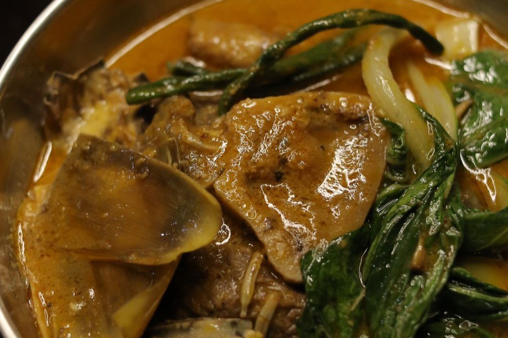

Kare-Kare (Oxtail Peanut Stew)
A rich, velvety peanut stew served with fermented shrimp paste

Kare-Kare is a celebration dish: tender oxtail (and often tripe) in a thick, nutty sauce colored gold with annatto. It is rich and mellow on its own, which is exactly why it is served with a scoop of salty bagoong (fermented shrimp paste) on the side — the two together are the whole point. It takes time, but almost all of it is hands-off simmering.
Ingredients
- 1 kg oxtail, cut into pieces
- 3/4 cup peanut butter
- 1/4 cup ground toasted rice (for thickening)
- 2 tbsp annatto (atsuete) powder, or 3 tbsp annatto oil
- 1 banana blossom (puso ng saging), sliced
- 2 eggplants, sliced
- 1 bunch string beans (sitaw), cut into 2-inch lengths
- 1 bunch bok choy (pechay)
- 1 onion, chopped
- 4 cloves garlic, minced
- 2 tbsp fish sauce
- Bagoong (fermented shrimp paste), to serve
Instructions
- Boil the oxtail in enough water to cover until very tender, 2 to 3 hours (or 45 minutes in a pressure cooker). Reserve about 4 cups of the broth.
- In a clean pot, sauté the garlic and onion, then stir in the annatto for color.
- Pour in the reserved broth, peanut butter, and ground toasted rice. Simmer, stirring, until the sauce thickens to a velvety consistency.
- Return the oxtail to the pot and season with fish sauce.
- Add the string beans, eggplant, and banana blossom and cook until tender, about 8 minutes. Add the bok choy last so it stays bright.
- Serve hot with steamed rice and a generous spoonful of sautéed bagoong on the side.
Cook's tip: No ground toasted rice? Toast raw rice in a dry pan until golden, then grind it fine — it thickens the sauce and adds a subtle nuttiness. Never add the bagoong to the pot; its saltiness is meant to be balanced bite by bite.
Curious which Filipino dish matches your personality? Take the Pinoy Food Personality Test or browse the full Filipino Food Guide.